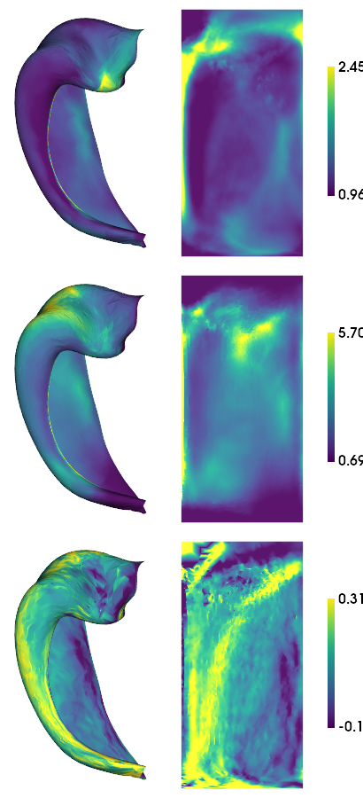

Morphology
Overview
Morphological measures of thickness, gyrification, and curvature are calculated within HippUnfold. Here we examine these to ensure they are consistent with previous work, and that they don’t differ drastically between datasets.
[2]:
import numpy as np
import matplotlib.pyplot as plt
import nibabel as nib
import hippomaps as hm
Histology data
[5]:
source_dir = '../../publication-hippomaps/sourcedata/BIDS_HISTO/'
hippunfold_dir = '../../publication-hippomaps/hippunfold/HISTO_v1.3.0_100um/hippunfold/'
subs = ['bbhist', 'bbhist', 'pli3d', '122017', '122017', '152017', '152017']
ses = ''
hemis = ['L','R','L','R','L','L','R','L','R']
labels = 'hipp'
den='unfoldiso'
# get expected number of vertices and their indices
nV,iV = hm.config.get_nVertices(labels,den)
features = ['thickness', 'gyrification', 'curvature']
morph_dat_hist = np.zeros([nV,len(subs),len(features)])*np.nan
d=[]
for f,feature in enumerate(features):
for s,sub in enumerate(subs):
d = nib.load(f'{hippunfold_dir}/sub-{sub}/surf/sub-{sub}_hemi-{hemis[s]}_space-corobl'\
f'_den-{den}_label-{labels}_{feature}.shape.gii')
morph_dat_hist[:,s,f] = d.darrays[0].data
if feature=='curvature':
morph_dat_hist[:,s,f] = np.tanh(morph_dat_hist[:,s,f])
if hemis[s]=="R":
morph_dat_hist[:,s,f] = -morph_dat_hist[:,s,f]
[7]:
hm.plotting.surfplot_canonical_foldunfold(np.mean(morph_dat_hist,axis=1), labels=labels, hemis=['L'], unfoldAPrescale=True, den=den, color_bar='right', share='row', tighten_cwindow=True, embed_nb=True)
/export03/data/opt/venv/lib/python3.8/site-packages/brainspace/plotting/base.py:287: UserWarning: Interactive mode requires 'panel'. Setting 'interactive=False'
warnings.warn("Interactive mode requires 'panel'. "
[7]:

Ultra-high field data at 7T
[13]:
hippunfold_dir = '../../publication-hippomaps/hippunfold/PNI_v1.3.0_super/hippunfold'
subs = ['PNC002', 'PNC003', 'PNC006', 'PNC007', 'PNC009', 'PNC010', 'PNC015', 'PNC016', 'PNC018', 'PNC019']
ses = ''
hemis = ['L','R']
labels = ['hipp']#,'dentate']
den = '0p5mm'
# get expected number of vertices and their indices
nV,iV = hm.config.get_nVertices(labels,den)
morph_dat_MRI7T = np.zeros([nV,2,len(subs),len(features)])*np.nan
d=[]
for h,hemi in enumerate(hemis):
for l,label in enumerate(labels):
for f,feature in enumerate(features):
for s,sub in enumerate(subs):
try:
d = nib.load(f'{hippunfold_dir}/sub-{sub}/surf/sub-{sub}_hemi-{hemi}_space-T1w'\
f'_den-{den}_label-{label}_{feature}.shape.gii')
morph_dat_MRI7T[iV[l],h,s,f] = d.darrays[0].data
except:
print(f'{sub} {feature} {label} not found')
morph_dat_MRI7T[:,0,:,2] = -morph_dat_MRI7T[:,0,:,2]
[14]:
hm.plotting.surfplot_canonical_foldunfold(np.nanmean(morph_dat_MRI7T,axis=(1,2)), hemis=['L'], labels=labels, unfoldAPrescale=True, den=den, color_bar='right', share='row', tighten_cwindow=True, embed_nb=True)
[14]:

High-field data at 3T
[16]:
hippunfold_dir = '../../publication-hippomaps/hippunfold/MICs_v1.3.0/hippunfold'
subs = ['HC048', 'HC043', 'HC087', 'HC037', 'HC055', 'HC100', 'HC036', 'HC017', 'HC088', 'HC040', 'HC058', 'HC076', 'HC090', 'HC059', 'HC101', 'HC063', 'HC094', 'HC024', 'HC050',
'HC080', 'HC013', 'HC026', 'HC001', 'HC084', 'HC105', 'HC083', 'HC042', 'HC014', 'HC033', 'HC081', 'HC106', 'HC108', 'HC095', 'HC002', 'HC102', 'HC028', 'HC020', 'HC049',
'HC007', 'HC023', 'HC065', 'HC025', 'HC056', 'HC003', 'HC015', 'HC077', 'HC067', 'HC072', 'HC109', 'HC086', 'HC089', 'HC091', 'HC031', 'HC039', 'HC112', 'HC068', 'HC034',
'HC032', 'HC060', 'HC047', 'HC103', 'HC046', 'HC009', 'HC097', 'HC116', 'HC053', 'HC079', 'HC029', 'HC075', 'HC078', 'HC057', 'HC018', 'HC074', 'HC064',
'HC096', 'HC010', 'HC038', 'HC093', 'HC082', 'HC092', 'HC027', 'HC019', 'HC005', 'HC008', 'HC011', 'HC044', 'HC030', 'HC035', 'HC085', 'HC069', 'HC041', 'HC012', 'HC054', 'HC022', 'HC016', 'HC099',
'HC073', 'HC052', 'HC045']
ses = 'ses-01'
hemis = ['L','R']
labels = ['hipp']#,'dentate']
den = '0p5mm'
# get expected number of vertices and their indices
nV,iV = hm.config.get_nVertices(labels,den)
morph_dat_MRI3T = np.zeros([nV,2,len(subs),len(features)])*np.nan
d=[]
for h,hemi in enumerate(hemis):
for l,label in enumerate(labels):
for f,feature in enumerate(features):
for s,sub in enumerate(subs):
try:
d = nib.load(f'{hippunfold_dir}/sub-{sub}/{ses}/surf/sub-{sub}_{ses}_hemi-{hemi}_space-T1w'\
f'_den-{den}_label-{label}_{feature}.shape.gii')
morph_dat_MRI3T[iV[l],h,s,f] = d.darrays[0].data
except:
print(f'{sub} {feature} {label} not found')
morph_dat_MRI3T[:,0,:,2] = -morph_dat_MRI3T[:,0,:,2]
[18]:
hm.plotting.surfplot_canonical_foldunfold(np.nanmean(morph_dat_MRI3T,axis=(1,2)), hemis=['L'], labels=labels, unfoldAPrescale=True, den=den, color_bar='right', share='row', tighten_cwindow=True, embed_nb=True)
[18]:

save
[9]:
# save 2D map
for f,feature in enumerate(features):
for h,hemi in enumerate(hemis):
cdat = np.nanmean(morph_dat_MRI3T[iV[0],h,:,f],axis=1).flatten()
data_array = nib.gifti.GiftiDataArray(data=cdat)
image = nib.gifti.GiftiImage()
image.add_gifti_data_array(data_array)
nib.save(image, f'../maps/HippoMaps-initializationMaps/Dataset-MICs/MRI-3T-{feature}_average-99_hemi-{hemi}_den-0p5mm_label-hipp.shape.gii')
[10]:
# save 2D map
for f,feature in enumerate(features):
cdat = np.nanmean(morph_dat_MRI7T[iV[0],:,:,f],axis=(1,2)).flatten()
data_array = nib.gifti.GiftiDataArray(data=cdat)
image = nib.gifti.GiftiImage()
image.add_gifti_data_array(data_array)
nib.save(image, f'../maps/HippoMaps-initializationMaps/Dataset-PNI/MRI-7T-{feature}_average-20_hemi-mix_den-0p5mm_label-hipp.shape.gii')
[11]:
for f,feature in enumerate(features):
cdat = np.nanmean(morph_dat_hist[:,:,f],axis=1).flatten()
data_array = nib.gifti.GiftiDataArray(data=cdat)
image = nib.gifti.GiftiImage()
image.add_gifti_data_array(data_array)
nib.save(image, f'../maps/HippoMaps-initializationMaps/Dataset-Mixed/histology-{feature}_average-7_hemi-mix_den-unfoldiso_label-hipp.shape.gii')